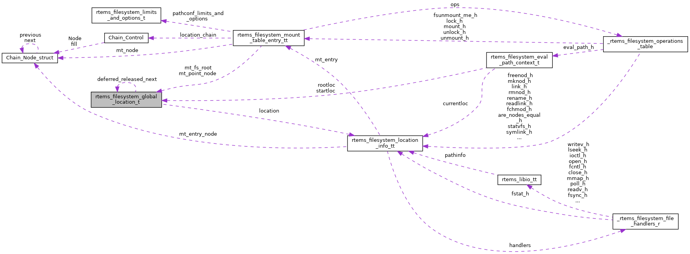

|
RTEMS
5.0.0
|
|
RTEMS
5.0.0
|
Global file system location. More...
#include <fs.h>

Data Fields | |
| rtems_filesystem_location_info_t | location |
| int | reference_count |
| struct rtems_filesystem_global_location_t * | deferred_released_next |
| int | deferred_released_count |
Global file system location.
The global file system locations are used for
During the path evaluation global start locations are obtained to ensure that the current file system will be not unmounted in the meantime.
To support a release within critical sections of the operating system a deferred release is supported. This is similar to malloc() and free().
| int rtems_filesystem_global_location_t::deferred_released_count |
A release within a critical section can happen multiple times. This field counts the deferred releases.
Definition at line 96 of file fs.h.
Referenced by rtems_filesystem_location_transform_to_global().
| struct rtems_filesystem_global_location_t* rtems_filesystem_global_location_t::deferred_released_next |
A release within a critical section of the operating system will add this location to a list of deferred released locations. This list is processed in the next rtems_filesystem_global_location_obtain() in FIFO order.
Definition at line 90 of file fs.h.
Referenced by rtems_filesystem_location_transform_to_global().
| rtems_filesystem_location_info_t rtems_filesystem_global_location_t::location |
Definition at line 82 of file fs.h.
Referenced by IMFS_fsunmount(), IMFS_initialize_support(), IMFS_mount(), IMFS_unmount(), msdos_shut_down(), and rtems_filesystem_location_transform_to_global().
| int rtems_filesystem_global_location_t::reference_count |
Definition at line 83 of file fs.h.
Referenced by rtems_filesystem_location_transform_to_global().
 1.8.17
1.8.17